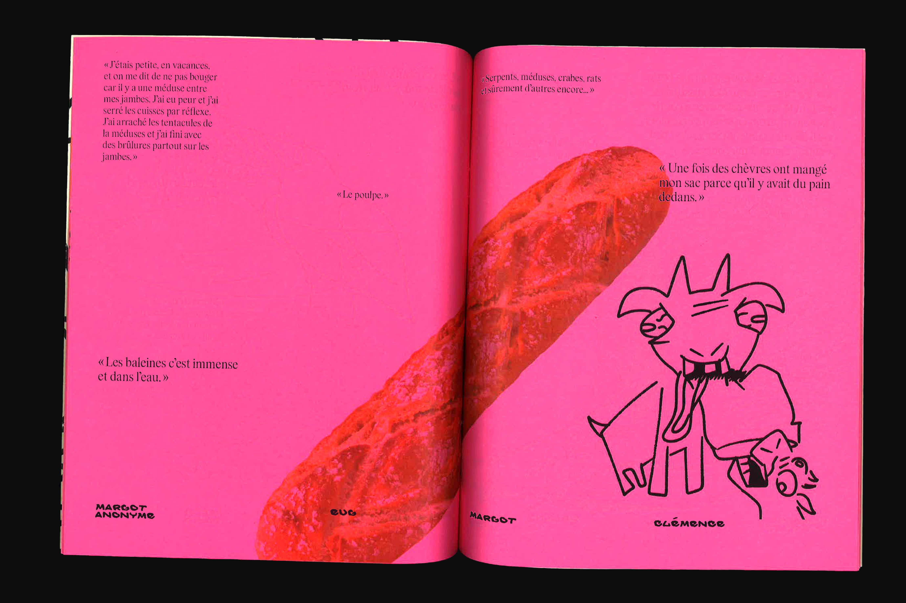
Scary Bestions
2024 - Magazine, édition, direction artistique
Cette revue questionne notre rapport aux animaux en riant de la zoophobie populaire, grâce à des sondages et statistiques réalisés en amont du projet. On y retrouve, grossièrement reliés sur du papier fluo, des anecdotes absurdes, des dessins bestiaux mais ô grand jamais des images des animaux «flippants» en question (on n’est pas chez les sauvages, non plus).
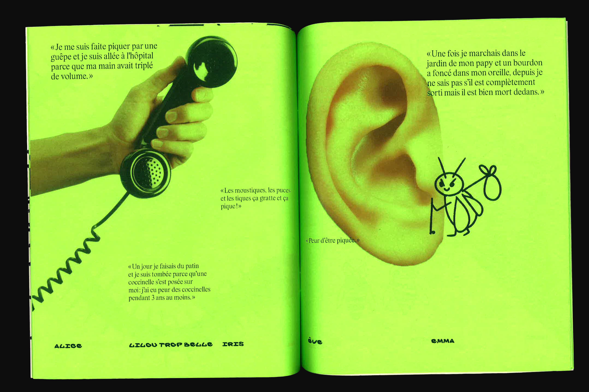
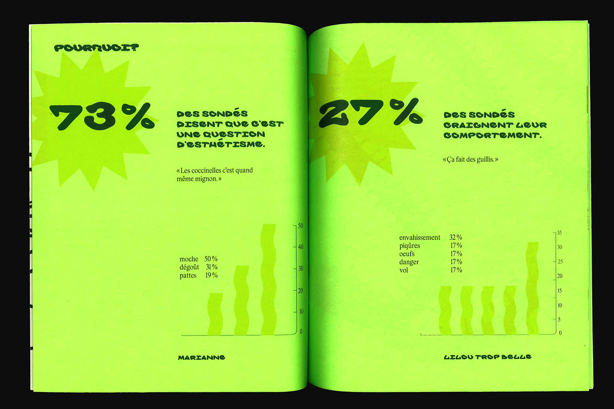
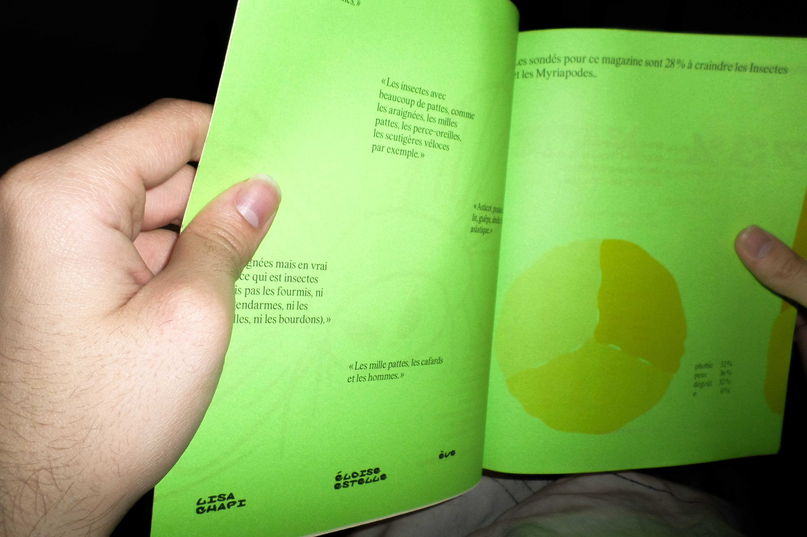
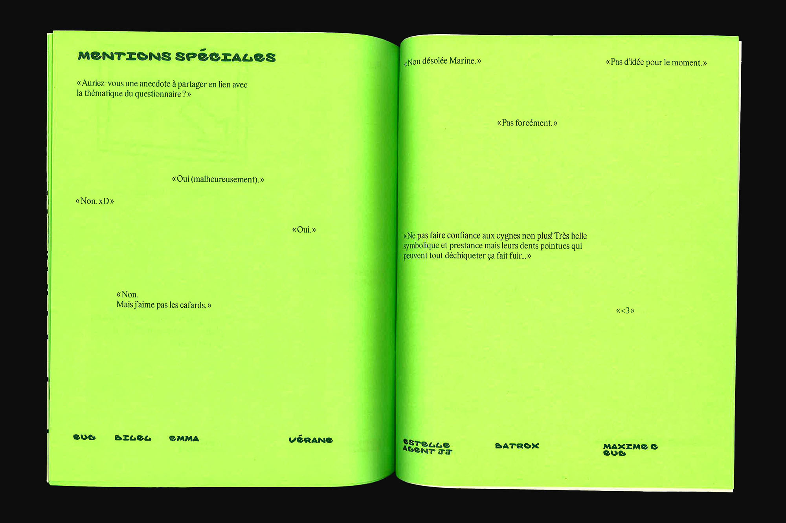
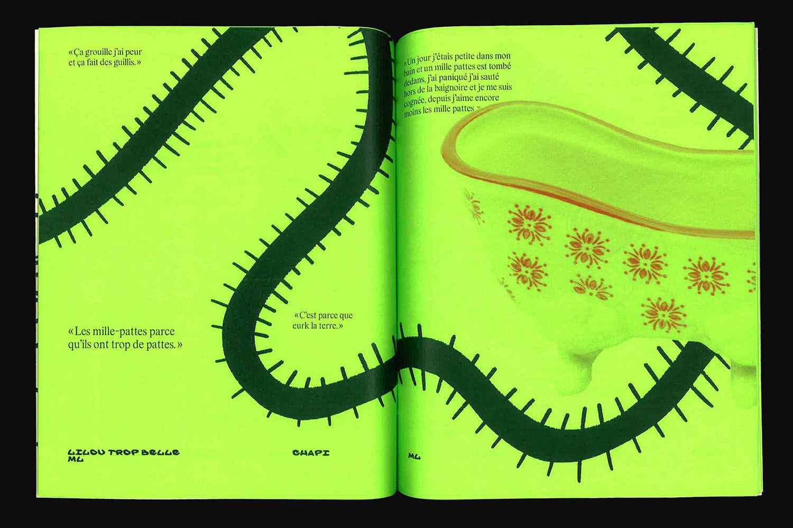
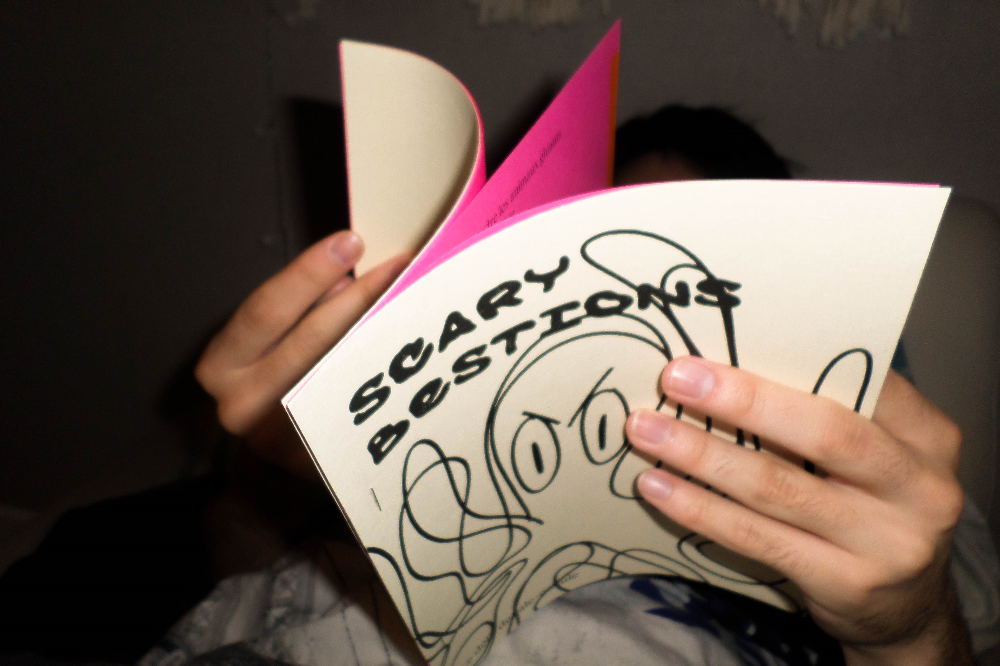
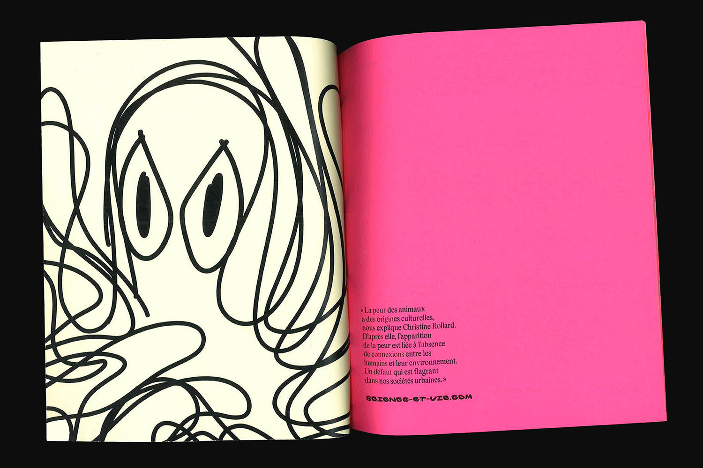
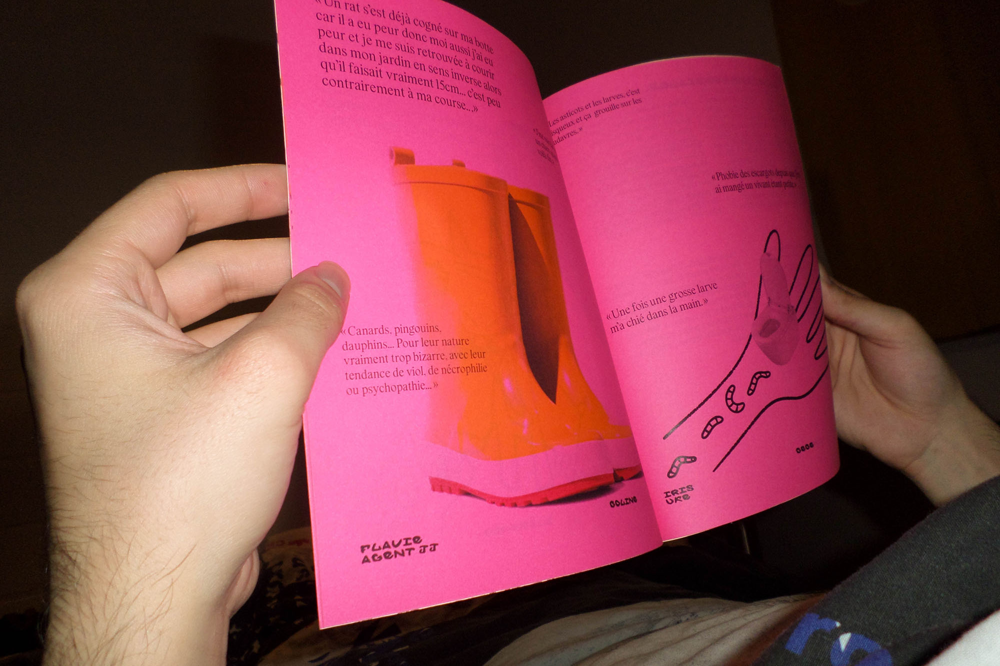
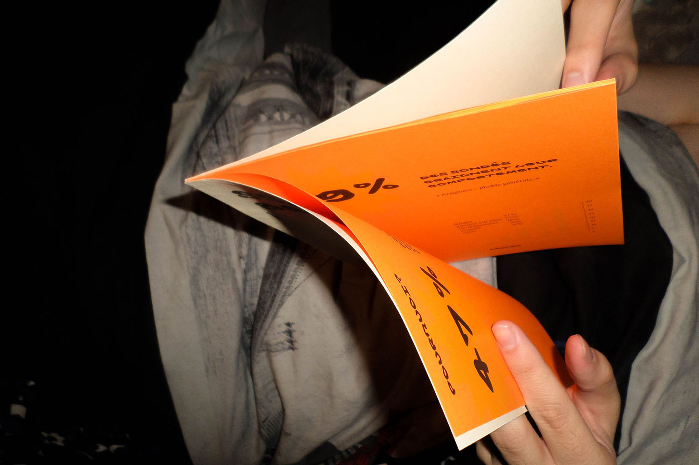
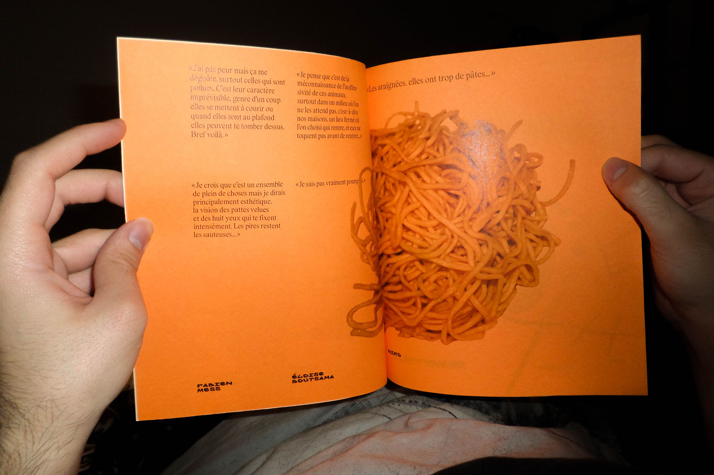
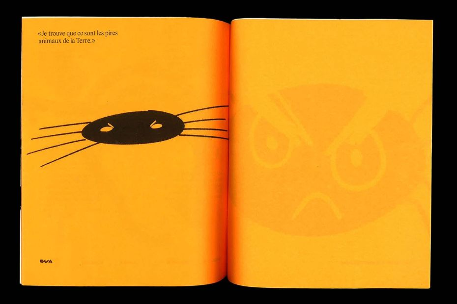
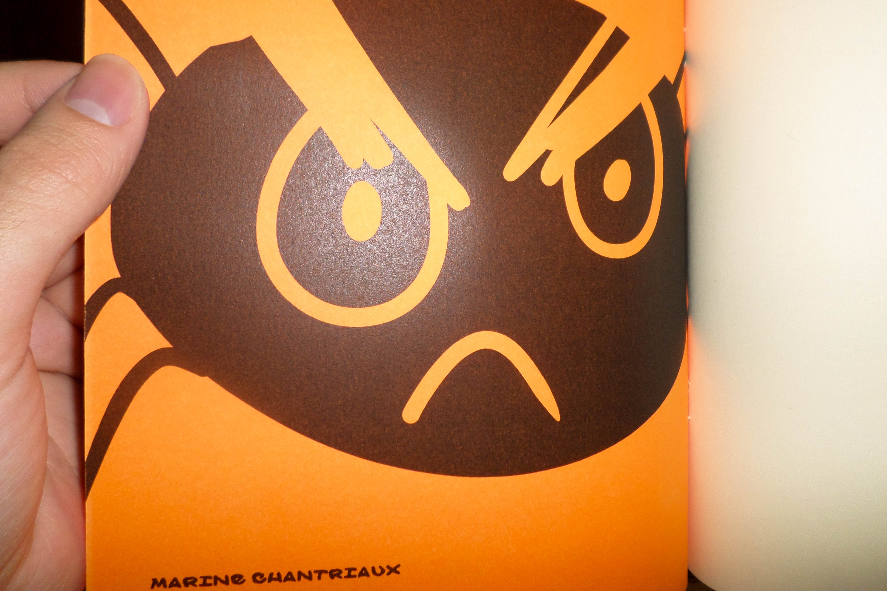
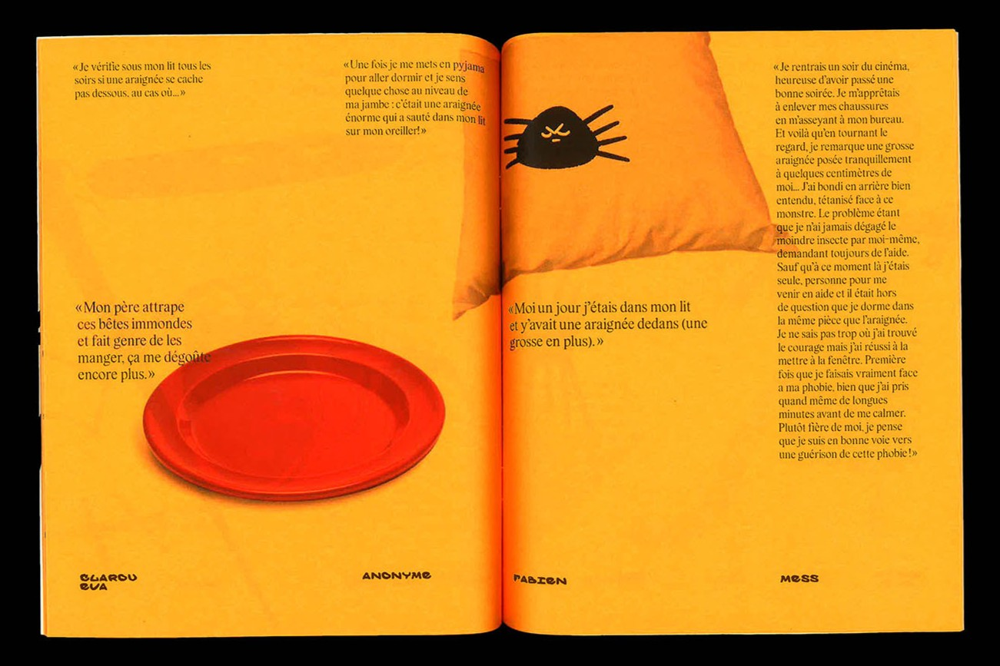
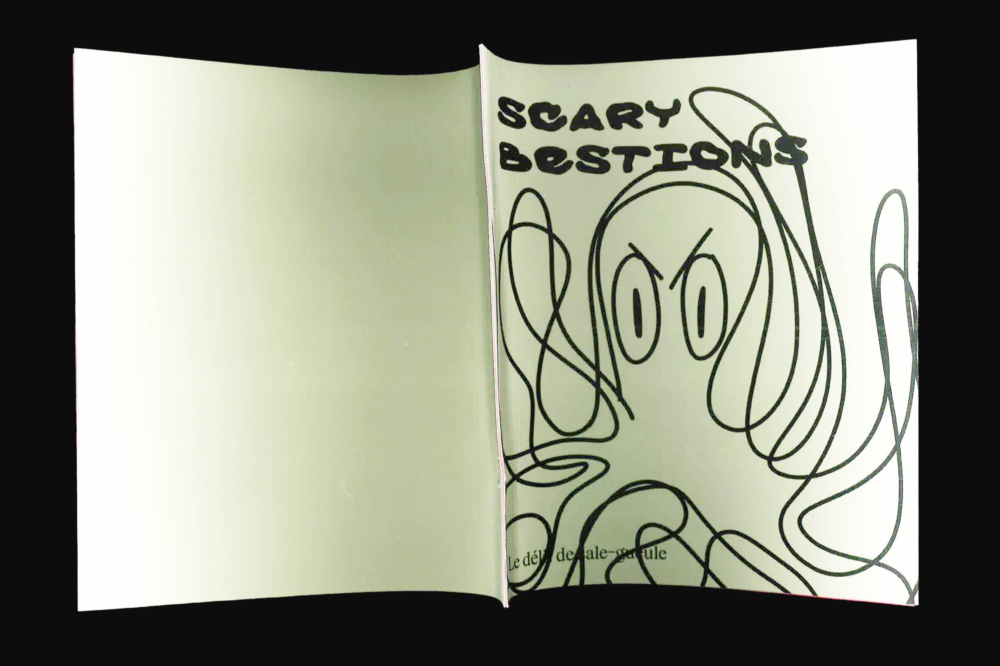
Bac à sable